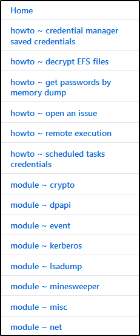

This is a Post-Exploitation of the Domain Controller:
First of all, we need to Download Mimikatz on the Domain Controller
(Suggest to read the Wiki on Github) 
Execute Mimikatz (with your accurate architecture):
We need to load a module (privilege::debug)
to know if we can bypass the memory protection:
If it is OK, we can do this.
Now we can catch all the password dumped in memory
From the login since the last reboot. Another interesting thing is that we have a NTLM hash and we can pass that!!
We can take the Administrator hash over there and pass to a Domain Controller, if we were into another PC!
Another cool thing is the wdigest: a feature enable by default in Windows 7 and before that stored your password in clear!!
In Windows 10/8 wdigest is disabled, but we can turn it on with Mimikatz!!! It is a registry feature, so it will be enabled even if the machine is reboot.
But we still need to wait for someone to log out and log in.
For now, we can try to dump the SAM (not all commands can work)
In this case we got an error
Just because we didn't dump with Mimikatz, doesn't mean that we can't obtain it with other ways (Metasploit to get a shell, secretsdump.py etc.)
We can try to dump the LSA (Local Security Authority):
LSA is a protected subsystem in Windows authentication,
authenticate and create log of sessions on your local computer.
We can obtain the NTLM hashes and try to crack them offline
Another option is to dump the NTDS.dit (Look at "Active Directory Physical Components" to know more) You need to count how many hashes you cracked in %, to notice the client how the password policy is working